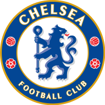
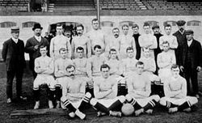
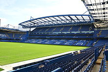

สโมสรฟุตบอลเชลซี

สโมสรฟุตบอลเชลซี (อังกฤษ: Chelsea Football Club) เป็นสโมสรฟุตบอลอาชีพที่ตั้งอยู่ในเขตฟูลัม ทางฝั่งตะวันตกของกรุงลอนดอน ซึ่งเล่นอยู่ในพรีเมียร์ลีก ลีกสูงสุดของฟุตบอลอังกฤษ
ก่อตั้งขึ้นใน ค.ศ. 1905 มีสนามเหย้าคือ สแตมฟอร์ดบริดจ์ เป็นหนึ่งในสโมสรที่ประสบความสำเร็จมากที่สุดของอังกฤษ[3][4][5] ในการแข่งขันภายในประเทศ เชลซีชนะเลิศฟุตบอลลีกสูงสุด 6 สมัย,
เอฟเอคัพ 8 สมัย, ลีกคัพ 5 สมัย และ เอฟเอคอมมิวนิตีชีลด์ 4 สมัย และในการแข่งขันระหว่างประเทศ พวกเขาชนะเลิศยูฟ่าแชมเปียนส์ลีก 2 สมัย, ยูฟ่าคัพวินเนอร์สคัพ 2 สมัย, ยูฟ่ายูโรปาลีก 2 สมัย,
ยูฟ่าซูเปอร์คัพ 2 สมัย และฟุตบอลชิงแชมป์สโมสรโลก 1 สมัย
ประวัติ

ใน ค.ศ. 1904 กัส เมียร์ส ซื้อสนามกรีฑาสแตมฟอร์ดบริดจ์ โดยมีเป้าหมายที่จะเปลี่ยนเป็นสนามฟุตบอล และยื่นข้อเสนอให้ฟูลัมที่อยู่ใกล้เคียงกันเช่าสนาม แต่ถูกปฏิเสธ
ดังนั้นเมียร์สจึงเลือกที่จะก่อตั้งสโมสรของเขาเองเพื่อใช้สนามนี้ เนื่องจากมีทีมชื่อฟูลัมอยู่ในเมืองแล้ว จึงใช้ชื่อสโมสรว่าเชลซีซึ่งเป็นเมืองที่อยู่ติดกัน ชื่ออื่น ๆ ที่เคยอยู่ในตัวเลือกคือ
สโมสรฟุตบอลเคนซิงตัน, สโมสรฟุตบอลสแตมฟอร์ดบริดจ์ และสโมสรฟุตบอลลอนดอน[12] เชลซีก่อตั้งขึ้นเมื่อวันที่ 10 มีนาคม ค.ศ. 1905 ที่เดอะไรซิงซันผับ (ปัจจุบันคือ เดอะบุตเชอส์ฮุก)[13]
อยู่ตรงข้ามประตูทางเข้าหลักในปัจจุบันบนถนนฟูลัม และเชลซีได้รับเลือกให้เข้าสู่ฟุตบอลลีกหลังจากนั้นไม่นาน ผู้จัดการทีมคนแรกของสโมสรคือ จอห์น รอเบิร์ตสัน ซึ่งคุมทีมในฐานะ ผู้เล่น-ผู้จัดการทีม[14]
สนาม

สแตมฟอร์ดบริดจ์เป็นสนามฟุตบอลแห่งเดียวของเชลซีตั้งแต่เริ่มก่อตั้งมาตั้งอยู่ในเขตฟูแลม ในลอนดอน โดยเปิดใช้งานอย่างเป็นทางการเมื่อวันที่ 28 เมษายน ค.ศ. 1877[73]
โดยถือเป็นหนึ่งในสนามฟุตบอลที่เก่าแก่ที่สุดของอังกฤษ และในช่วง 28 ปีแรกที่เปิดใช้ สนามแห่งนี้ถูกใช้สำหรับการแข่งขันกีฬาดั้งเดิมในสมัยสมัยวิกตอเรียโดยเฉพาะ และยังถูกใช้เป็นส่วนหนึ่งของสนามกรีฑาด้วย[74]
สนามสแตมฟอร์ดบริดจ์ออกแบบโดยอาร์ชิบาลด์ ลีตช์ สถาปนิกชาวสกอตแลนด์ สามารถจุคนได้กว่า 42,000 คน และจะมีแผนขยายเป็น 60,000 คน แต่แผนถูกเลื่อนไปโดยไม่มีกำหนด
สแตมฟอร์ดบริดจ์ยังใช้ในการแข่งขันทางการของทีมชาติอังกฤษในบางโอกาส รวมถึงการแข่งขันเอฟเอคัพ และลีกคัพในนัดสำคัญ